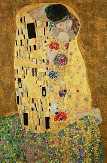

Gustav Klimt
L'obiettivo al quale tende Klimt è, dunque, quello di glorificare con il Bacio il trionfo della potenza vivificatrice dell'eros, in grado di trascendere le antitesi tra sesso maschile e sesso femminile. Nell'opera questi conflitti emergono nelle mani nodose e affusolate dell'uomo, in contrasto con la lucentezza della diafana pelle della fanciulla, ma specialmente nell'adozione di una particolarissima grammatica visiva: mentre le vesti dell'uomo sono costituite da elementi geometrici verticali e spigolosi, nelle tonalità del nero, del grigio e del bianco, la donna è rivestita di forme circolari e spiraliformi, dalle forme morbide e variopinte. Eppure, la netta separazione tra i due sessi viene superata con quella luminosa crisalide aurea che racchiude le due figure, in congiunzione con lo sfondo che riproduce, con un gioco di trasparenze ed affioramenti, le forme della coppia di amanti.
 Home
Home